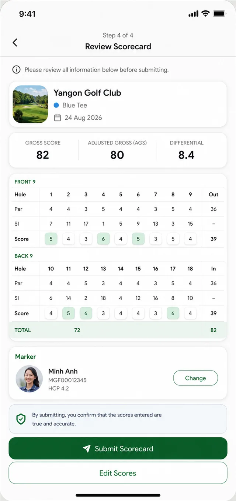

mHandicap
Eighteen holes in eighteen tapsMười tám hố, mười tám lần chạm
A national golf handicap app. One tap records the score and moves to the next hole, so entry stops being the reason people skip it.App handicap golf cấp quốc gia. Một chạm là ghi điểm và sang hố kế tiếp, để việc nhập không còn là lý do bị bỏ qua.
68 screens, 37 documented components, three languages.68 màn hình, 37 component có tài liệu, ba ngôn ngữ.

